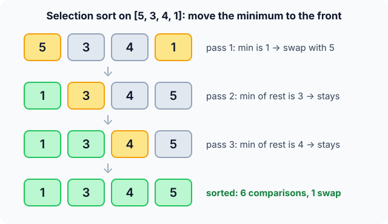

Prerequisites
- Arrays and zero-based indexing.
- Finding the minimum of an array with one loop.
- Big-O notation (see Complexity analysis).
The analogy
Everyday analogy
Picture a teacher lining up a class by height. They look over everyone still waiting, call the shortest child to the next spot in line, and repeat.
Selection sort does the same. Each pass scans the unsorted part, picks the smallest, and puts it in the next slot at the front. After $n-1$ picks, the line is in order.
How it works
Start with one pass by hand
Take [5, 3, 4, 1]. Scan from left to right and remember the smallest you've seen. Guess first, then open "Check".
Example: pass 1, predict before you read
Step 1. Start with 5 as the smallest so far. Compare with 3. Predict: who is the smallest now?
Check
3. We only remember its position; nothing moves yet.
Step 2. Cover the next line and guess: after comparing with 4 and then 1, what is the minimum?
Check
4 is not smaller than 3, but 1 is. The minimum is 1, at index 3.
Step 3. The scan is over. Predict: which two numbers swap?
Check
1 swaps with the first slot, 5: [1, 3, 4, 5]. One swap, three comparisons. The 1 is final.

Quick recall: Before reading further, cover the text above and say out loud: what does one pass of selection sort guarantee?
Check your answer
The smallest remaining value is placed in the next front slot, in its final position.
Finish the run
After pass 1, the array [1, 3, 4, 5] already looks sorted. Does selection sort notice?
- Pass 2. Scan
[3, 4, 5]. Predict: how many comparisons, and is there a swap?Check
2 comparisons. The minimum, 3, is already in place, so there is no swap.
- Pass 3. Scan
[4, 5]. Predict: does the algorithm stop early?Check
No. It makes 1 more comparison anyway. Total: 6 comparisons, 1 swap.
Quick recall: Without scrolling up, say out loud: why did selection sort still run passes 2 and 3 on an array that was already sorted?
Check your answer
It has no early-stop check. To be sure 3 is the minimum, it has to look at every remaining number, so it always scans everything.
The rule in plain words
Scan the unsorted part and remember where the smallest number is. Swap it with the first unsorted slot. That slot is now final. Move the boundary one step right.
Repeat until only one number is left; it is automatically the largest.
Quick recall: Before you read the code, write the three steps of one pass in your own words. Then check below.
Check your answer
1. Look through the unsorted part and note the smallest number's position. 2. Swap that number into the first unsorted slot. 3. Treat that slot as done and move on.
The code
Read this code after you have done one pass by hand. It will make more sense.
void selection_sort(int a[], int n) {
for (int i = 0; i < n - 1; i++) {
int min = i; /* index of smallest so far */
for (int j = i + 1; j < n; j++)
if (a[j] < a[min]) min = j; /* remember, don't swap yet */
if (min != i) { /* one swap per pass */
int t = a[i]; a[i] = a[min]; a[min] = t;
}
}
}Definition
What you just did, in one line: selection sort repeatedly selects the minimum of the unsorted part a[i..n-1] and swaps it into position i.
flowchart TD
A["min = i"] --> B{"a[j] < a[min] ?"}
B -->|yes| C["min = j"]
B -->|no| D["j = j + 1"]
C --> D
D --> E{"j reached the end?"}
E -->|no| B
E -->|yes| F["Swap a[i] and a[min], i = i + 1"]
F --> G{"i = n - 1 ?"}
G -->|no| A
G -->|yes| H["Done: the array is sorted"]
[5, 3, 4, 1], how many times does the arrow to "min = j" fire in pass 1? (Answer: twice, for 3 and then for 1.)How fast is it?
Quick recall: Before looking at the formula, predict: does the number of comparisons depend on whether the input is sorted?
Check your answer
No. Pass $i$ always scans the whole unsorted part, whatever the values are.
The passes make $n-1$, $n-2$, …, $1$ comparisons on every input:
$$\sum_{i=1}^{n-1} i \;=\; \frac{n(n-1)}{2} \;=\; \Theta(n^2).$$Swaps are a different story: at most one per pass, so at most $n-1$ in total.
| Best | Average | Worst | Extra space | Stable | In-place |
|---|---|---|---|---|---|
| $O(n^2)$ | $O(n^2)$ | $O(n^2)$ | $O(1)$ | No | Yes |
Warning
Selection sort is not stable. On [2a, 2b, 1], pass 1 swaps 1 with 2a and throws 2a past 2b: [1, 2b, 2a].
Exam tip
"Which sort makes the fewest swaps?" Selection sort: at most $n-1$. Its comparisons are always $\frac{n(n-1)}{2}$, so best case = worst case = $\Theta(n^2)$.
Common mistakes
- Swapping inside the inner loop every time a smaller value appears, which turns one swap per pass into many.
- Expecting an $O(n)$ best case on sorted input: there is no early stop.
- Calling it stable. The long-distance swap can jump an element over an equal one.
Try it yourself
Exercise 1 (warm-up)
Sort [3, 1, 2] by hand. How many comparisons and how many swaps does selection sort make?
Hint
Pass 1 scans 3 numbers and pass 2 scans 2. Swap only if the minimum isn't already in place.
Answer
3 comparisons and 2 swaps: [1, 3, 2] after pass 1, then [1, 2, 3] after pass 2.
Exercise 2 (a bit harder)
An array of 6 numbers is already sorted. How many comparisons and how many swaps does the code above make? Write your answer down before you open it.
Show answer
15 comparisons, which is $\frac{6 \cdot 5}{2}$, and 0 swaps, because the min != i check skips every swap.
Did you know?
Did you know?
Heap sort is selection sort with a smarter "find the minimum" step. A heap finds the extreme value in $O(\log n)$ instead of $O(n)$, which turns $O(n^2)$ into $O(n \log n)$.
So the idea you just learned is the backbone of one of the fast sorts. And when writes are expensive, as on flash memory, its few swaps are a real advantage.
Key points to remember
If you remember one thing from each line, remember the because.
- After pass $k$, the first $k$ slots are final, because each pass puts the smallest remaining value there.
- It is always $\Theta(n^2)$ because each pass must scan the whole unsorted part to be sure it found the minimum.
- It makes at most $n-1$ swaps because it swaps once per pass, after the scan.
- It is not stable because the swap can carry an element over an equal one far away.
- Extra space is $O(1)$ because it only stores the index of the minimum.
Self-check questions
Answer these in order, out loud. They follow the page, so your answers become the script of your video.
- How is selection sort like a teacher lining up a class?
Sample answer
The teacher repeatedly picks the shortest child still waiting and sends them to the next spot. Selection sort picks the smallest remaining value and puts it in the next front slot.
- Walk through pass 1 on [5, 3, 4, 1].
Sample answer
The smallest so far goes 5, then 3, stays 3 at 4, then becomes 1. At the end, 1 swaps with 5, giving [1, 3, 4, 5]: three comparisons, one swap.
- Why does the code remember the index and swap only once, after the scan?
A good answer says what would happen to the number of swaps otherwise.
Sample answer
Until the scan ends, we don't know the true minimum. Swapping every time we see a smaller value would waste many swaps; one swap at the end keeps it to at most $n-1$.
- So what is selection sort, in one sentence?
Sample answer
It repeatedly finds the minimum of the unsorted part and swaps it into the first unsorted position.
- Why doesn't selection sort stop early on sorted input, like bubble sort can?
A good answer says what the scan has to do to be sure.
Sample answer
To know the minimum, it must look at every remaining number, and a scan with no swap tells it nothing about the rest. So every pass is a full scan, whatever the input.
- What is its time and space complexity?
Sample answer
$\Theta(n^2)$ in every case, with exactly $\frac{n(n-1)}{2}$ comparisons. Extra space is $O(1)$ and swaps are at most $n-1$.
- Is selection sort stable? Give an example.
Sample answer
No. On [2a, 2b, 1], swapping 1 to the front sends 2a past 2b, giving [1, 2b, 2a].
- When would you choose selection sort over insertion sort?
Sample answer
When writes are much more expensive than reads, because it does at most $n-1$ swaps. Otherwise insertion sort wins, since it's adaptive and stable.
- If you had to teach this to a friend in 2 minutes, what would you leave out, and why?
Sample answer
I'd leave out the exact comparison formula and the flash-memory use case. I'd keep the line-up analogy, one pass on a small array, and "always $O(n^2)$, few swaps, not stable".
External resources
- VisuAlgo: Sorting: pick "SEL" and watch the minimum being selected.
- Toptal: Selection sort animation: notice it takes the same time on sorted and random data.
- Wikipedia: Selection sort: analysis, and a stable variant.
Videos
- YouTube: selection sort as a folk dance: the AlgoRythmics video for selection sort.
- YouTube search: selection sort explained: pick a short walkthrough.